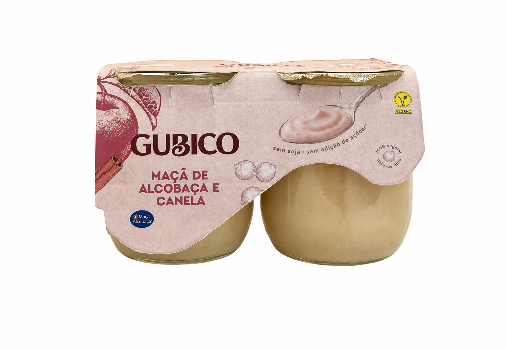

The fermented chickpea yogurt that nourishes your body and the planet.

GUBICO is a premium soy-free plant-based fermented product made from chickpeas and upcycled Alcobaça PGI apples.
Joana Rita Maia
Maria Inês Vieira
Inês Traquina
Aster Noel Dsouza